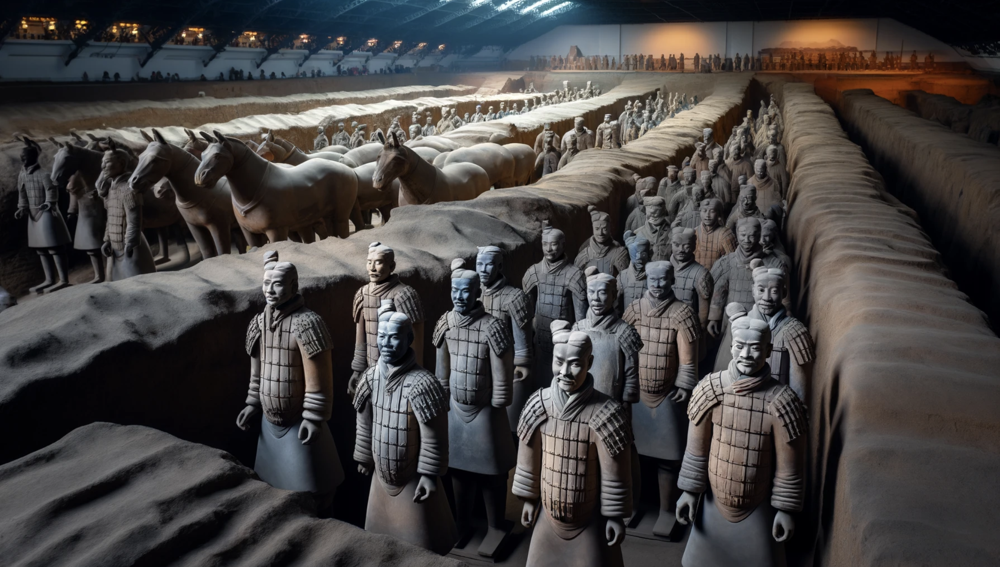

About China
China, officially known as the People's Republic of China, is a country in East Asia. It is the world's most populous country, with a population of more than 1.4 billion. Covering approximately 9.6 million square kilometers, it is the world's third or fourth largest country by area. China is a cradle of civilization, with its fertile plain in the Yellow River basin being the birthplace of ancient Chinese civilization.

Forbidden City

The Forbidden City in Beijing is a majestic palace complex that served as the home of emperors and the political center of Chinese government for nearly 500 years. Its architectural grandeur and historical significance make it one of the most visited cultural landmarks in the world. The palace is a masterpiece of Chinese architecture, with its golden roofs, red walls, and intricate decorations symbolizing the majesty and authority of the emperor. Visitors can explore its vast courtyards, grand halls, and exquisite gardens, each telling stories of China's imperial past.
Terracotta Army
Discovered in 1974, the Terracotta Army in Xi'an is a collection of terracotta sculptures depicting the armies of Qin Shi Huang, the first Emperor of China. The site includes thousands of life-sized figures, each with unique facial expressions and details. The army was buried with the emperor to protect him in the afterlife and is considered one of the greatest archaeological discoveries of the 20th century. The site offers a fascinating glimpse into ancient Chinese funerary art and military history, with ongoing excavations revealing new insights and artifacts.
Zhangjiajie National Forest Park

Zhangjiajie National Forest Park, with its towering sandstone pillars, inspired the floating Hallelujah Mountains in the movie Avatar. It is a UNESCO World Heritage Site and offers breathtaking views, scenic walks, and adventurous activities like glass-bottomed bridges. The park is known for its unique karst landscape, dense forests, and diverse wildlife, making it a paradise for nature lovers and photographers. Visitors can explore the park's numerous trails, take a cable car ride for panoramic views, and experience the thrill of walking on the world's longest and highest glass bridge.
Guilin
Known for its stunning karst landscape, Guilin offers picturesque scenery with its limestone hills, winding rivers, and traditional villages. A cruise on the Li River, surrounded by lush greenery and unique rock formations, is a must-do experience. Guilin's natural beauty has inspired poets and artists for centuries, with its iconic landscapes often depicted in traditional Chinese paintings. Visitors can explore the city's cultural heritage, visit ancient temples and pagodas, and enjoy the vibrant local cuisine. Nearby attractions include the Longji Rice Terraces and Yangshuo's scenic countryside, offering further exploration opportunities and outdoor activities.